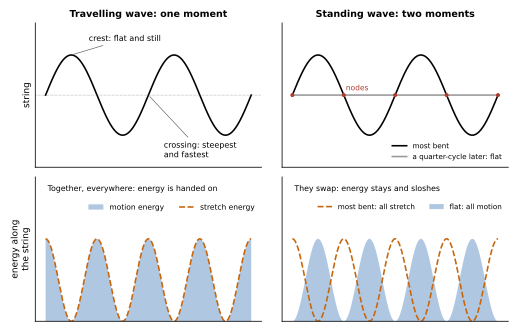
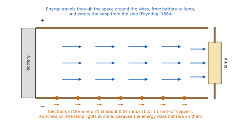

Library › The Unified Framework for the Graviton Pressure Theory
Resonance Transmissions
Light, Sound and Electricity in the Medium
About This Paper
Light, sound, electricity and radiation are one kind of event: a disturbance handed on through a medium. Sound is handed on through matter, light through the medium that fills all space, and electricity through both. This paper sets out how each is carried, what touches what, and what is exchanged, and it shows the measurements that bear on the medium that carries them.
The standard account gives sound a medium and denies light one. It computes light as if it travelled through empty space, and adds the real contents of space afterward as corrections. This paper starts the other way round, with space full, as it is everywhere light has ever been measured.
This is the second edition; the list at the end says what changed from the first and why. The medium itself is set out in Parts 15 and 23, magnetism in Part 22, and the measured numbers in Part 24.123 Claims are marked by their status, as the key shows.
28.1 Space Is Full
There is no empty space in a solar system. A star fills the space around it continuously, with matter and with radiation, out to the edge of the region it reaches.
| Contents | How much |
|---|---|
| Solar wind | About 5 protons and electrons in every cubic centimetre, streaming outward at about 400 km/s; the Sun sheds about 1.5 million tonnes of it every second |
| Sunlight | 1,361 watts on every square metre; the Sun turns about 4 million tonnes of its mass into light every second |
| Neutrinos | About 65 billion through every square centimetre every second, day and night |
| Magnetic field | Carried out by the wind and wound into a spiral by the Sun’s turning; about 5 nanotesla |
| Dust and cosmic rays | Dust glows faintly in sunlight as the zodiacal light; cosmic rays arrive from beyond |
| Background light | About 410 photons in every cubic centimetre of the universe, left from its early history |
The figures are measured.4567 The Sun’s outflow fills a bubble about 120 times wider than the Earth’s orbit; both Voyager spacecraft crossed its edge, in 2012 and 2018, where the wind meets the gas between the stars.8
These contents act on light, and physicists correct for them every day. The plasma slows radio waves, slightly more at lower frequencies, and astronomers measure the gas between us and a distant pulsar by how much later its low-frequency pulses arrive.9 Near the Sun the effect is large enough that the Cassini mission sent its signals on two radio frequencies to cancel it, before it could measure the delay the Sun itself causes.10 In practice, then, space acts as a medium for light.
Interplanetary space is also sparse. Five particles in a cubic centimetre is emptier than the best laboratory vacuum, which still holds thousands of molecules in the same volume. At visible frequencies the plasma’s effect on light is almost nil, and light still travels at exactly \(c\), with the same measured properties of space that set \(c\) in a laboratory. So the measured matter alone does not set [Hypothesis] the speed of light, and something else is there whose properties those are. The star, its outflow, its light and the medium act as one system, [Hypothesis] not as four things to be weighed one at a time.
28.2 One Medium, Many Voices
The idea that light is a wave of a medium did not begin with GPT. Electromagnetic theory was built on it.
In 1861 James Clerk Maxwell modelled electric and magnetic effects as the behaviour of a medium filling space: magnetism as the medium’s swirl, and the electric field as an elastic displacement of the medium. He worked out how fast a sideways (transverse) wave would travel through such a medium, using only electrical measurements made on a laboratory bench by Weber and Kohlrausch.11 The answer was 310,740 km/s. Fizeau had measured the speed of light directly at 314,858 km/s. The two agree to within about 1.3 per cent. Maxwell wrote that “we can scarcely avoid the inference that light consists in the transverse undulations of the same medium which is the cause of electric and magnetic phenomena”.12
Physics kept Maxwell’s equations and, in 1905, set his medium aside, because the equations could be used without it. The equations still say what the medium did: light’s speed is set by two measured properties of space, its permittivity \(\varepsilon_0\) and its permeability \(\mu_0\), \[c = \frac{1}{\sqrt{\mu_0\varepsilon_0}} = 299{,}792{,}458~\text{m/s}. \tag{1}\] These are properties of something. A permittivity, a permeability and an impedance are properties of a substance, [Argued] and the standard account assigns them to a space it calls empty (Part 23).
GPT returns the medium. Light, sound, electricity, magnetism and radiation are modes of one medium, [Hypothesis] differing in what carries them and how:
Light is a transverse wave of the medium itself.
Sound is a wave handed on through matter, bond to bond (Part 21).13
Electricity is the medium strained and set flowing by the handedness of matter’s patterns (Part 19).14
Magnetism is the medium’s swirl (Part 22).
Radiation is light across its whole range of rhythms, answered differently by matter at each.
Each is a transmission: a pattern handed on through a medium, to be received elsewhere. In this sense every wave is a message, [Hypothesis] carried not through emptiness but through the substance that joins its source to its receiver.
28.3 What Every Wave Needs
Every wave needs two things in what carries it: stiffness, which pushes a disturbed part back, and inertia, which carries it past where it started. The speed of the wave is set by the two together: \[v = \sqrt{\frac{\text{stiffness}}{\text{inertia}}}. \tag{2}\] For sound in a material the stiffness is its bulk modulus \(K\) (Part 24’s coherence resistance) and the inertia its density \(\rho\), so \(v = \sqrt{K/\rho}\). For light in space, \(1/\varepsilon_0\) plays the part of the stiffness and \(\mu_0\) the inertia, which is what Maxwell found and what the equation for \(c\) says.
A medium that carries waves also has an impedance: how hard it pushes back for a given motion, set by stiffness and inertia multiplied, \(Z = \sqrt{\text{stiffness}\times\text{inertia}}\). For sound in a material it is \(\rho v\). For light in space it is \[Z_0 = \sqrt{\frac{\mu_0}{\varepsilon_0}} = 376.73~\Omega. \tag{3}\] Radio engineers match their antennas to this number, as audio engineers match a loudspeaker to the air. A wave meeting a boundary between two media is partly reflected, and the fraction reflected follows the same rule for sound and for light, \[R = \left(\frac{Z_1 - Z_2}{Z_1 + Z_2}\right)^2 . \tag{4}\]
| Wave and medium | Speed | At a boundary |
|---|---|---|
| Sound in air (20 \(^\circ\)C) | 343 m/s | Impedance 413 Pa s/m |
| Sound in water | 1,480 m/s | Impedance \(1.48\times10^6\) Pa s/m: air to water reflects 99.9% of sound |
| Sound in steel | about 5,900 m/s | Impedance about \(4.6\times10^7\) Pa s/m |
| Light in space | 299,792 km/s | Impedance 376.73 \(\Omega\) |
| Light in water | about 225,000 km/s | Index 1.33 |
| Light in glass | about 200,000 km/s | Index about 1.5: air to glass reflects 4% of light |
Sound and light obey the same rules [Argued] of speed, impedance and reflection. For sound, the stiffness and inertia belong to matter; for light, the same rules require a stiffness and an inertia of space itself. They belong to the medium. [Hypothesis]
28.4 Travelling and Standing Waves
Where a wave’s energy sits depends on whether the wave is travelling or standing, and this is clearest on a stretched string (Figure 28.1).
A small piece of string carries two kinds of energy: motion energy, from its sideways speed, and stretch energy, from how far it is stretched. Stretch depends on the slope, how far the piece is displaced compared with its neighbours, not on its distance from the centre line. In a travelling wave, a piece at a crest is momentarily flat and momentarily still: both energies are zero. A piece crossing the centre line is at its steepest and moving fastest: both are greatest. For a wave travelling one way the sideways speed is always the wave speed times the slope, so in a travelling wave the two energies rise and drop together [Argued], everywhere.
Each piece of a travelling wave is not an oscillator storing and releasing energy. It is a link in a chain, receiving energy from behind and handing it on ahead, through the tension of its neighbours. What touches the piece is the string on either side, and what is exchanged is momentum.
In a standing wave the picture changes. The string bends and flattens in place; when it is most bent all the energy is stretch, gathered at the nodes, and a quarter-cycle later, when it is flat and moving fastest, all the energy is motion, gathered between them. The energy stays where it is and sloshes between the two forms, a quarter-cycle apart, as it does in a mass on a spring.

Light behaves the same way. In light travelling through space, the electric and magnetic fields rise and drop together; in a standing light wave, inside a microwave oven’s cavity or a laser, they swap a quarter-cycle apart, as energy does between a capacitor and a coil in a tuned circuit. The electric field is the medium’s strain [Hypothesis] and the magnetic field its swirling motion, as in Maxwell’s medium; so light shows the same two patterns [Argued] of energy as a string, and for the same reason.
The standing pattern matters beyond strings and cavities. An atom’s states are standing patterns of the electron’s knot around the nucleus (Part 19), and the energy of an atom belongs to standing patterns; light is what travels between them.
28.5 Sound: A Wave Carried by Matter
Sound is a wave of compression handed on through matter: each region pushes on the next through the bonds between atoms, and in gases through collisions. Its speed is \(\sqrt{K/\rho}\), set by how stiff the material is and how much it weighs per volume. In a solid, sound travels along the same lines of bonds that carry load and heat; sound and heat in a crystal are both carried as waves of its lattice, and a crystal’s order decides how far they go before scattering (Part 21).
Sound needs matter. Since the bell-jar experiments of the seventeenth century it has been known that a ringing bell goes silent when the air around it is pumped out: sound needs matter to carry it [Argued]; the medium alone does not carry it. Sound is a pattern of matter’s motion, and where there is no matter, there is nothing for that pattern to move.
Sound in “empty” space. Space, however, is full of matter, thinly spread. Where the gas is dense and hot enough, sound travels through it. The Sun rings like a bell: sound waves trapped inside it make its whole surface heave up and down with periods near five minutes, and helioseismology reads the Sun’s interior from them.15 The hot gas filling the Perseus cluster of galaxies carries sound waves driven by its central black hole, ripples tens of thousands of light-years apart, a note about 57 octaves below middle C.16
Sound carries momentum. A sound wave pushes on what it meets. Strong sound fields hold small drops and beads in the air and move them about without touching them.17 The push is the momentum the wave carries, delivered at the surface it strikes.
What touches what. In sound, matter touches matter. The medium is present in all of it, because matter’s patterns are patterns of the medium (Part 19) and bonds are kept up by exchanges through the medium (Part 21); sound is the medium’s work, done through matter. [Hypothesis]
28.6 Light: A Transverse Wave of the Medium
Speed. Measured locally, with local rulers and clocks, light’s speed is always \(c\), in every direction and at every place. Every ruler and clock is itself a pattern of the medium, changed by the medium’s streaming in the same proportion as light (Part 23), so a local measurement of light’s speed always gives \(c\). [Argued]
Seen from far away, light is slowed near a mass. The medium’s index rises [Hypothesis] where its active pressure is lowered, toward a mass (Part 23). This slowing is measured directly: radio signals passing close to the Sun arrive later than they would by a straight path through unslowed space, by about a quarter of a millisecond on a round trip to Mars when it lies behind the Sun, an effect first predicted by Shapiro in 1964 and confirmed by Cassini to a few parts in 100,000.1819 The same slowing bends light by 1.75 arcseconds at the edge of the Sun, as a lens of graded glass bends it.
Every colour at one speed. In space, light of every frequency travels at the same speed. Gamma rays of very different energies from a burst seven billion years away arrived within a second of each other.20 The medium does not spread light out by colour. [Argued] Matter does: in glass, blue light is slowed more than red, which is how a prism separates them.
Polarisation. Light’s sideways motion has a direction across its path: that direction is its polarisation. In free space light of every polarisation travels alike. In some crystals, the patterns of matter respond differently to sideways motion in different directions, so the two polarisations travel at different speeds and are separated; a polarising filter is a material whose patterns absorb one direction and pass the other.
Momentum. Light pushes on what it strikes. Its push was measured with delicate vanes in 1901,21 and it now steers spacecraft fitted with solar sails. What light delivers to a surface is momentum, [Argued] in proportion to the energy it carries.
What touches what. The medium touches the receiver, [Hypothesis] the medium near the receiver set moving by the medium behind it, back to the source; what is exchanged is momentum and energy.
28.7 Light Meeting Matter
Matter answers light by rhythm. Each pattern of matter has rhythms of its own, its natural frequencies; light arriving at one of those rhythms is taken up, and light at other rhythms passes through or is re-sent.
Colour is rhythm. The colour of light is its frequency: red about 430 trillion cycles a second, violet about 750 trillion. Energy comes in amounts set by rhythm. When light gives energy to matter, it gives it in whole amounts proportional to its frequency, \(E = hf\). Light shone on a metal frees electrons only above a threshold frequency, however bright it is, and the freed electrons’ energy rises in a straight line with frequency.22 Brightness is power: how much energy arrives each second.
Absorption at resonance, transparency away from it. Glass is clear because its electrons’ natural rhythms lie in the ultraviolet, far above visible light: visible light makes them sway gently and re-send it, and passes on, slowed. Ultraviolet light matches those rhythms and is absorbed, which is why glass blocks it.23 Matter absorbs at its own rhythms [Argued] and is transparent away from them. Water shows the same rule twice over: its molecules can turn to follow a slow electric field, which gives water a large dielectric constant, about 80, but they cannot turn fast enough to follow light, so for light its index is only 1.33.
Emission. An atom sends out light when its electron’s standing pattern changes from one form to another of lower energy. The light carries away the difference, at the rhythm \(f = \Delta E/h\). Because the standing patterns have fixed forms, each element sends out its own set of lines: hydrogen’s red line at 656 nanometres is the change from its third pattern to its second.
| Band | Frequency | What in matter answers |
|---|---|---|
| Radio | below 300 MHz | Charges in conductors, moving together: antennas |
| Microwave | 300 MHz to 300 GHz | Molecules turning: water heated in an oven |
| Infrared | to 430 THz | Bonds vibrating: heat radiated and absorbed |
| Visible | 430–750 THz | Outer electrons changing pattern: sight, photosynthesis |
| Ultraviolet | to 30 PHz | Outer electrons freed, bonds broken: sunburn, damage to DNA |
| X-rays | to about 30 EHz | Inner electrons; light atoms pass it, heavy atoms stop it: bone shows on film |
| Gamma rays | above | Nuclei; above 1.022 MeV light can make electron–positron pairs |
Harm and energy. Ultraviolet light, X-rays and gamma rays damage living tissue because each exchange delivers enough energy to free an electron or break a bond, a few electron-volts and up. Radiation harms by the energy of each exchange, [Argued] which is why a dim ultraviolet lamp can burn skin that a bright red lamp only warms.
28.8 Electricity in the Medium
Charge. Charge is the handedness of matter’s knot [Hypothesis] (Part 19): a pattern circulating at the speed of light, turning one way or the other relative to the medium’s flow. Like hands send out the medium in phase and push each other apart; unlike hands leave a deficit between them, and the medium’s pressure from outside pushes them together. Charge is exactly quantised and conserved because a winding comes in whole turns and cannot be undone except by its mirror image.
The electric field and voltage. The electric field is the medium’s strain [Hypothesis] around a charge, as Maxwell’s medium had it: an elastic displacement held while the charge is there. Voltage is the energy given to each unit of charge as it moves through that strain from one place to another. A capacitor stores energy in the strained medium between its plates, \(\tfrac12\varepsilon_0E^2\) in every cubic metre; a dielectric between the plates stores more, because its own patterns yield to the strain as well. The same yielding slows light in that material, so for frequencies the material’s patterns can follow, the dielectric constant and the refractive index are one measurement, \(n^2 = \varepsilon_r\).
Current: the electrons drift; the energy flies. The charges that move in a metal wire are electrons: Tolman and Stewart measured their charge-to-mass ratio by suddenly stopping a spinning coil,24 and the Hall effect shows their sign.25 But they move slowly. One ampere through a copper wire one millimetre square sets its electrons drifting at about 0.07 millimetres a second, slower than a snail. A lamp lights the moment it is switched on, because the energy does not ride on the electrons. It travels through the space around the wires, from the battery to the lamp, and enters the lamp from the side (Figure 28.2). This was shown by Poynting in 1884 and is standard physics.26

Induction. A changing magnetic field drives current around a loop. A push around a closed loop cannot come from a gradient, because a gradient’s push sums to zero around any loop; it comes from circulation. Induction is the medium’s changing swirl [Hypothesis] driving its flow around the loop (Part 22).
28.9 Measurements That Bear on the Medium
Several measurements bear directly on whether space is a medium. Each has a reading in the standard account as well, and that reading is stated beside it. Each is support for the medium, [Argued] not proof.
| Measurement | What was seen | Standard reading; medium reading |
|---|---|---|
| Maxwell, 1862 | Light’s speed computed from bench electrical measurements matched light’s measured speed | Standard: the equations need no medium. Medium: the measured properties of space are the medium’s stiffness and inertia |
| Fizeau, 1851 | Light in flowing water is carried along by part of the water’s speed, a fraction \(1 - 1/n^2\) (Fizeau 1851) | Standard: relativity’s rule for adding speeds. Medium: the water’s patterns carry part of the light’s re-sending with them |
| Sagnac, 1913 | Light sent both ways round a turning loop returns at different times (Sagnac 1913) | Standard: light’s speed is \(c\) only in a non-turning frame. Medium: the loop turns through the medium. Ring-laser gyroscopes and GPS use the effect daily |
| Casimir, 1997 | Two metal plates in “empty” space are pushed together (Lamoreaux 1997) | Standard: the vacuum’s quantum fields; it can also be computed as forces between the plates’ own charges (Jaffe 2005). Medium: space has pressure |
| Vacuum birefringence, 2016 | Light from a neutron star polarised as if its magnetised surroundings were a crystal (Mignani et al. 2017) | Standard: predicted by quantum electrodynamics in 1936. Medium: strained space behaves as a material. A hint, not yet confirmed |
| GW170817, 2017 | Gravitational waves and light from one event arrived together after 130 million years (Abbott et al. 2017) | Standard: both travel at \(c\). Medium: both are waves of one medium, so they share its speed |
| Plasma delays | Radio is slowed by the gas between planets and stars | Standard: a correction. Medium: the corrections are space acting as a medium, as it always does |
28.10 Open Questions
These questions are open in all of physics, not only in GPT. The standard account describes the results with great precision; it does not say what is there.
Conclusion
Space is full. A star fills its system with wind, light, fields and neutrinos, and beneath all of them is the medium whose stiffness and inertia set the speed of light. Sound, light and electricity obey the same rules of speed, impedance and reflection, because each is a pattern handed on through what carries it: sound through matter, light through the medium, and electricity through both, with the medium carrying the power and the electrons steering it.
For every transmission, GPT names what touches what: [Argued] the medium next to the receiver, set moving by the medium behind it, back to the source; and what is exchanged: momentum and energy.
Light is the whisper. Sound is the breath. Magnetism is the swirl.
Electricity is the tension. Radiation is the release.
All are medium. All are structure. All are signal.
Changes in the Second Edition
Changes to the argument
The speed of light is no longer written \(c_0/(1+\beta\,gp)\), slower where graviton pressure is higher. The sign is reversed: light slows toward a mass, where the medium’s active pressure is lower and its index higher (Part 23), and the slowing is measured (Shapiro delay, Cassini).
Colour as “tone, not energy” and brightness as “not necessarily high energy” are withdrawn: energy is exchanged in amounts \(hf\) (the photoelectric effect), and brightness is power. Colour is kept as rhythm.
Transparency at resonance (\(\kappa \approx 1\)) is reversed: matter absorbs at its resonances and is transparent away from them.
Ultraviolet and X-ray harm from “field incompatibility, not energy” is withdrawn: harm comes from the energy of each exchange, above the energy that frees an electron or breaks a bond.
“Current is not the motion of electrons” is restated: electrons do move (Tolman and Stewart; Hall), slowly; the energy and the signal travel through the medium around the wire (Poynting), which keeps the point that the medium carries the power.
Sound travelling in vacuum near spacecraft, stations or planets “in graviton-saturated regions” is withdrawn: sound needs matter. Sound in space travels where gas is (the Sun, the Perseus cluster).
Polarisation set by lattice-preferred axes in free space is restated: free space shows no preferred axis; polarisation is the direction of the medium’s sideways motion, and materials select it.
Redshift as “coherence fatigue” moves to Open, with the constraint from supernova time dilation.
Lensing as “lowest-impedance paths through layered graviton pressure fields” with magnification from “constructive compression” is restated as refraction in a smoothly graded index (Part 23).
Charge as outward divergence (positive) and inward spiral (negative) is replaced by handedness (Part 19).
Entanglement as a pre-structured corridor moves to Open, with the constraint from Bell tests.
The formulas \(V = \Delta gp\cdot d\), \(C = C_{res}A/\Delta gp\), \(R \propto C_{res}/R_{field}\), the transmission-efficiency and ionisation-risk laws, the GPT capacitance equation and the sound attenuation function are withdrawn: their units do not balance, and Part 24 replaced coherence resistance with measured moduli. The sound speed \(\sqrt{C_{res}/\rho}\) is kept, with \(C_{res}\) the bulk modulus.
The “dimensional anchoring” sections for light, sound, electricity, radiation and electromagnetism are removed; the measured quantities are in Part 24.
Conductivity changing with ambient graviton pressure is withdrawn as stated: clocks built on electronic transitions change rate with height by exactly the common factor, so local electronic behaviour is unchanged by place.
Removed as too far from the core
Consciousness and perception as field resonance; emotion shifting the graviton field; the voice and whole-body hearing as graviton signals; sound therapy and healing chambers; sonic levitation by reversed graviton pressure (acoustic levitation is kept, as momentum carried by sound); fractal charge as field self-alignment; gravimetric processors and field-based computation; targeted radiation therapies and engineered shielding by resonance feedback; quantum communication through corridors; the “messages” of each transmission and the closing “language of coherence” passages, except the closing verse, adapted.
Additions
Space is full: the contents of interplanetary space, and plasma as a medium for radio (Section 28.1).
Maxwell’s medium and his computed speed of light (Section 28.2).
Speed, impedance and reflection as common rules for sound and light (Section 28.3).
Travelling and standing waves, with a figure (Section 28.4).
Sound in the Sun and in the Perseus cluster; acoustic levitation (Section 28.5).
The Shapiro delay; light of every colour at one speed in space; light’s momentum (Section 28.6).
The spectrum table and transparency by resonance (Section 28.7).
Poynting’s account of where a circuit’s energy travels, with a figure; \(n^2 = \varepsilon_r\) (Section 28.8).
Measurements that bear on the medium, with both readings (Section 28.9).
Open questions, with their constraints (Section 28.10). Status marks and this list.